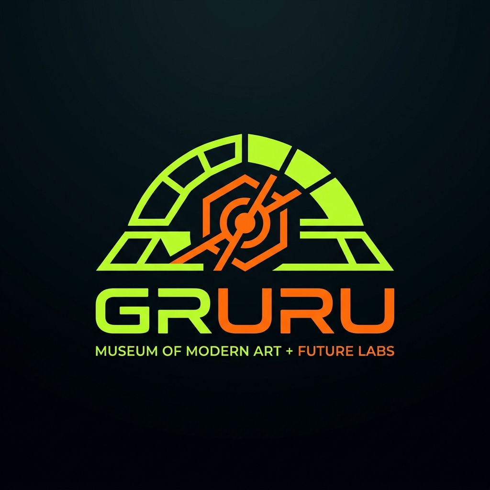
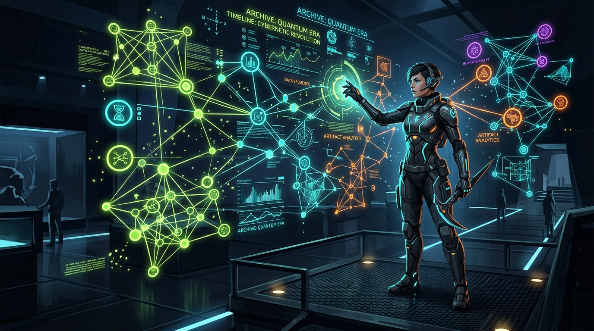

นำเสนอผู้บริหาร: โปรเจกต์พิพิธภัณฑ์ความรู้ดิจิทัลที่พลิกโฉมการเรียนรู้
ให้เป็นประสบการณ์แบบ Future Archaeology
"Reviving hidden knowledge from the past as new stories, built for everyday living."

เจาะกลุ่มอายุ 22-40 ปี ที่อยากรู้ลึกแต่ไม่อยากรู้สึกเหมือนนั่งเรียน
First jobber ชอบเนื้อหากระชับ 3-5 นาที ดีไซน์สวยงาม พร้อมแชร์ลงโซเชียล
นักออกแบบ/การตลาด ต้องการ Interactive Graph เจาะลึกหาแรงบันดาลใจ
วัยทำงาน/ครอบครัว เน้นความน่าเชื่อถือ และ Everyday Takeaway ที่ชัดเจน
เข้าใจความซับซ้อนของข้อมูลได้ใน 3 วินาที ผ่าน Interactive Graph Visualization
ดีไซน์แบบ Modern Art ผสม Sci-fi ห้องแล็บ
ใช้โหมดมืดเป็นค่าเริ่มต้น (Void Black) ตัดกับสีสว่าง (Specimen Lime) เพื่อสร้างจุดเด่น
เลย์เอาต์ยึดระบบกริด จัดสเปซกว้างแบบ White Cube วางองค์ประกอบเรียบหรู แต่แฝงลูกเล่นแบบ Sci-fi